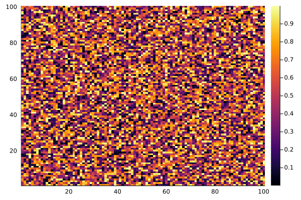

Ptychography
The available visualization functions for Ptychography are:
Components of the object tensor can be plotted using the plot_component function.
VisualizationToolbox.Ptychography.plot_component — Methodplot_component(;component::Array,type::String,color_gradient=:gray,resolution::Integer=200,colorbar::Bool=false)Return a heatmap of "component" The "component" input must have the Array type, but behaves differently if a 2D or 3D array is supplied
a 2D array will result in a single heatmap of the provided component with specified type
a 3D array will plot an array of heatmaps for each component in the array, with the third index specifying the current component i.e. component[:,:,i] corresponds to the ith componentthe "type" input must be a string and chosen from the following:
"phase": produce a heatmap of the phase of current component
"magnitude" produce a heatmap of the magnitude of current component
"angle" produce a heatmap of the angleAdditional plot attributes can be input as well
color_gradient: sets the colorscheme of the heatmap, a custom gradient can be set with cgrad([:color1,:color2,:color3,...:colorN], 256)
resolution: set the DPI of the plot, default: 200
colorbar: boolean to determine whether or not to include a colorbarthe angle type only supports 2D input, an error will be thrown for 3D arrays input with the angle typeFor a single component the resulting image should look like: 
interim text
VisualizationToolbox.Ptychography.plot_fibrils — Methodplot_fibrils(;fibril_dataset)return a plot of fibrils defined by the input dataframe